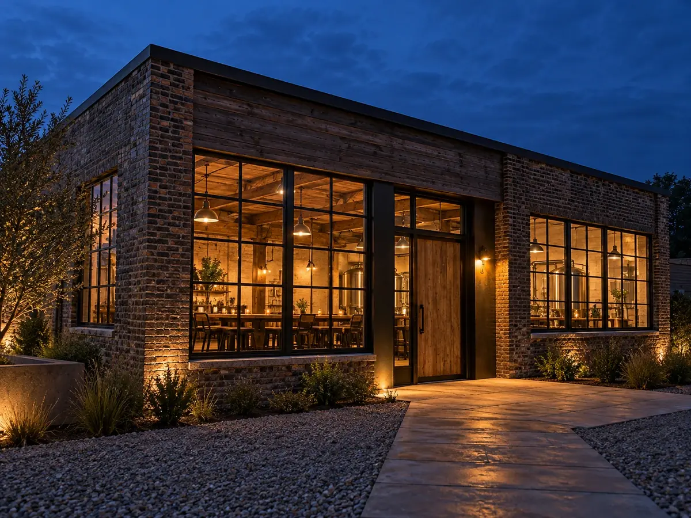
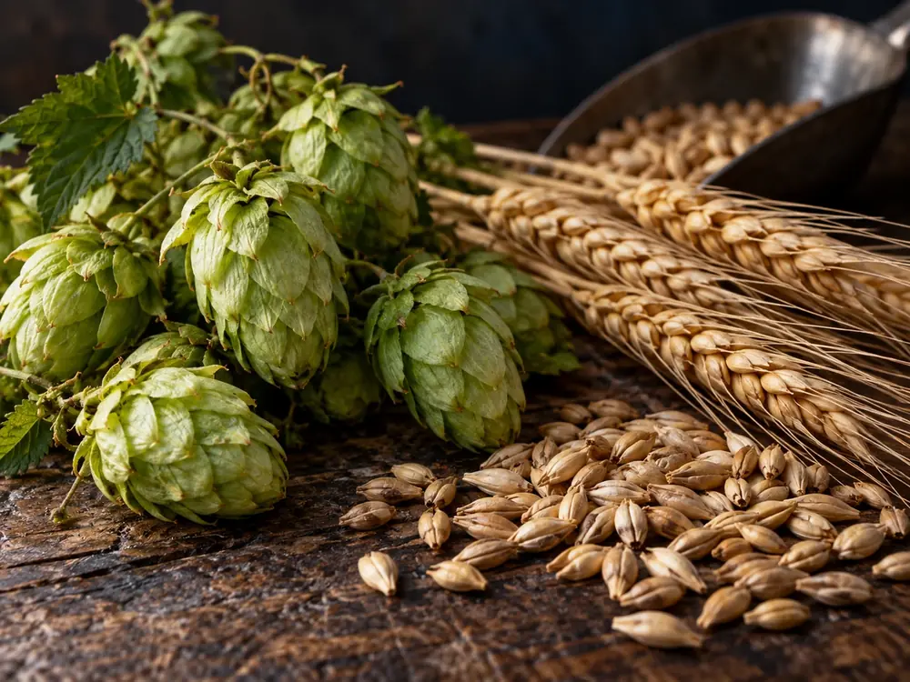

Brewery
古い倉庫に、
灯をともした。
川沿いに残っていた煉瓦の倉庫を、少しずつ直して醸造所にしました（架空）。高い天井と大きな窓は、そのまま残しています。

画像はAI生成のイメージです。実在の建物ではありません夕方、窓から
灯りがもれる。
倉庫だったころの梁と床は、そのまま使っています。仕込み場は奥、手前の窓ぎわがタップルーム。夕方になると、通りから仕込みのタンクと、カウンターの灯りが見えます。
大きな設備は置けません。そのかわり、一度に造る量を小さくし、季節ごとに配合を見直せるようにしました。造る量が少ないことは、よいやみの選んだやり方です。
醸造所・設備・数値はすべて見本用の架空の設定です。
Malt · Hops · Water
選ぶ基準は、
香りが穏やかなこと。
- 麦
- 焼き加減の違う麦を組み合わせ、色と甘みを決めます。宵ノ口は淡く、夜更は深く焙煎したものを多く使います。
- ホップ
- 苦味の強さより、香りの種類で選びます。柑橘、花、草。強すぎる香りは、宵の時間には合わないと考えています。
- 水
- 町の水をろ過して使います。やわらかい水は、麦の甘みを素直に出してくれます（見本の設定）。
Process
仕込みから、樽詰めまで。
一つの銘柄ができるまで、およそひと月。急がせないことが、香りを穏やかに保つ方法です（日数は見本の目安）。
- 仕込み麦を湯に浸し、甘い麦汁をつくる（約1日）
- 煮沸麦汁を煮て、ホップを入れる（約1日）
- 発酵酵母が糖を分け、香りが生まれる（7〜10日）
- 熟成低い温度で落ち着かせる（2〜4週）
- 樽詰め樽に詰め、タップルームで開ける日を待つ

画像はAI生成のイメージですOur way
造り手が決めていること。
よいやみには、醸造を受け持つ人と、タップルームを受け持つ人がいます。名前ではなく、役割として考え方を書いています。
醸造の担当強さより、香りで覚えてもらう。
度数や苦味を競うことはしません。二杯目にも同じ銘柄を選びたくなる、穏やかな香りを目指します。
醸造の担当季節ごとに、一つだけ増やす。
新しい銘柄は季節に一つ。造る量が少ないぶん、仕込みのたびに配合を見直します。
タップルームの担当樽を開ける日は、話す日。
新しい樽を開ける日は、造り手がカウンターに立ちます。どう造ったか、何と合わせるとよいかを、直接お伝えします。
造り手の話は、見学の日にも。
20歳未満の飲酒は法律で禁止されています。お酒は適量を。